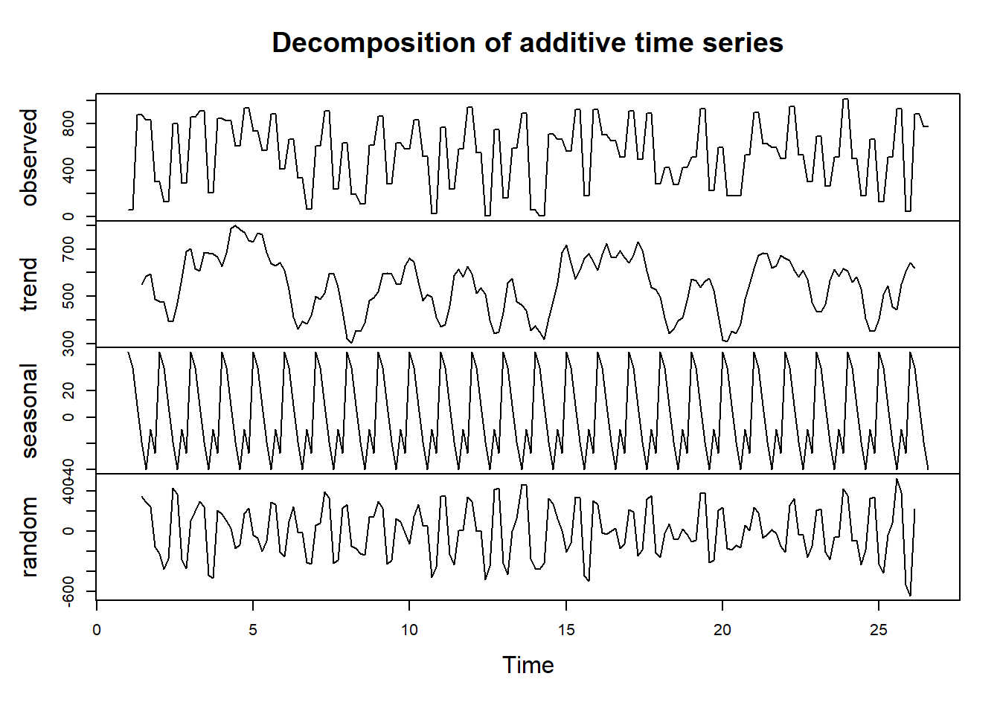
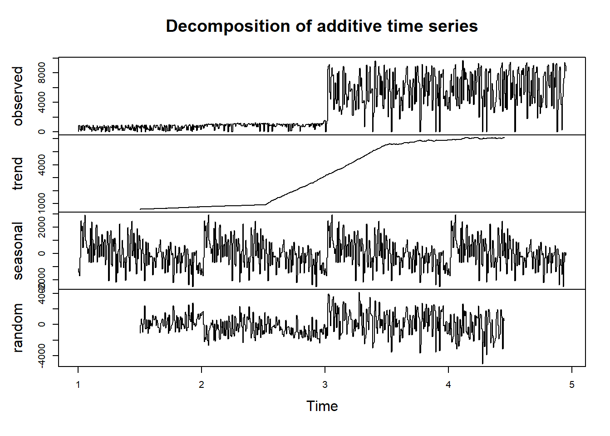
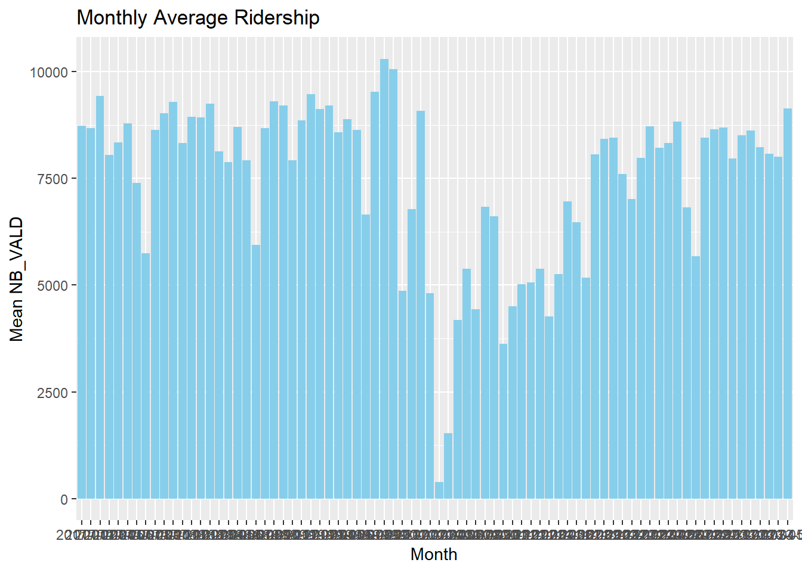
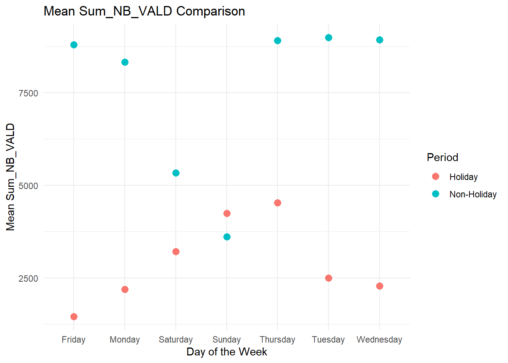
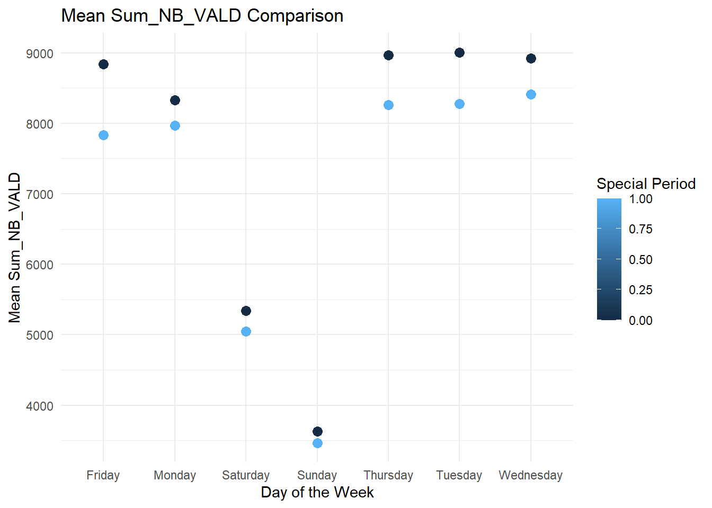
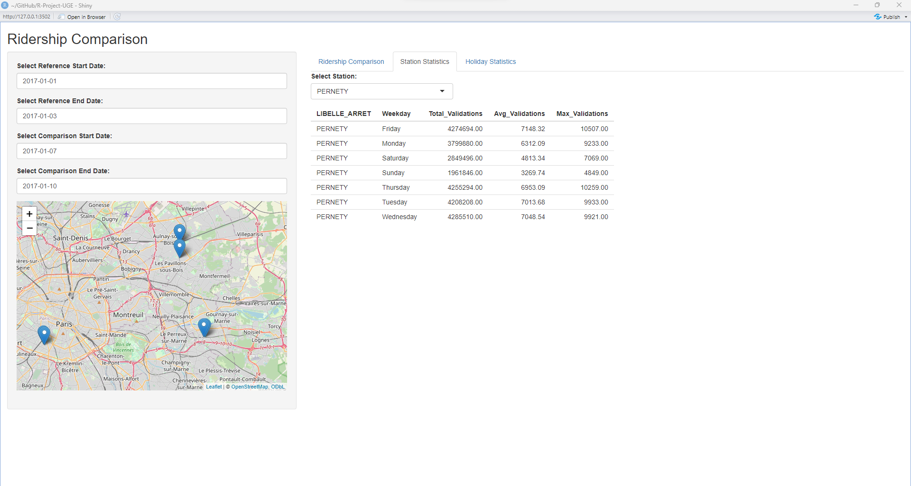
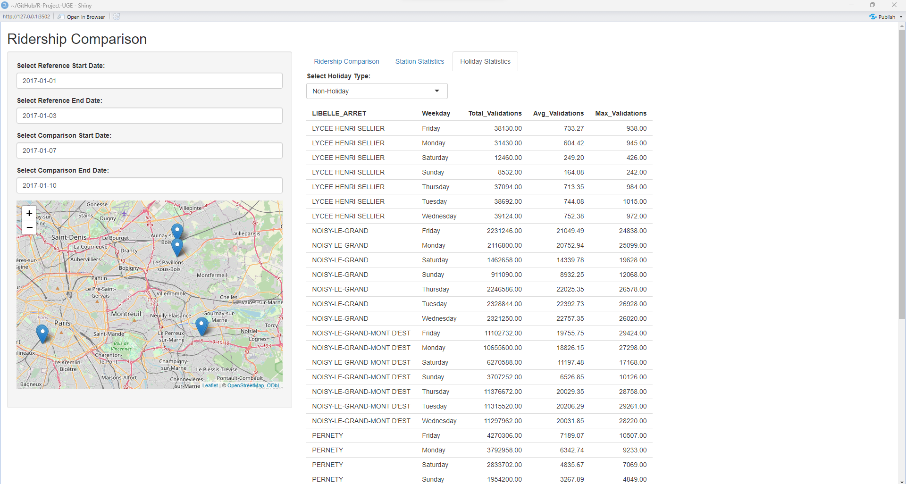
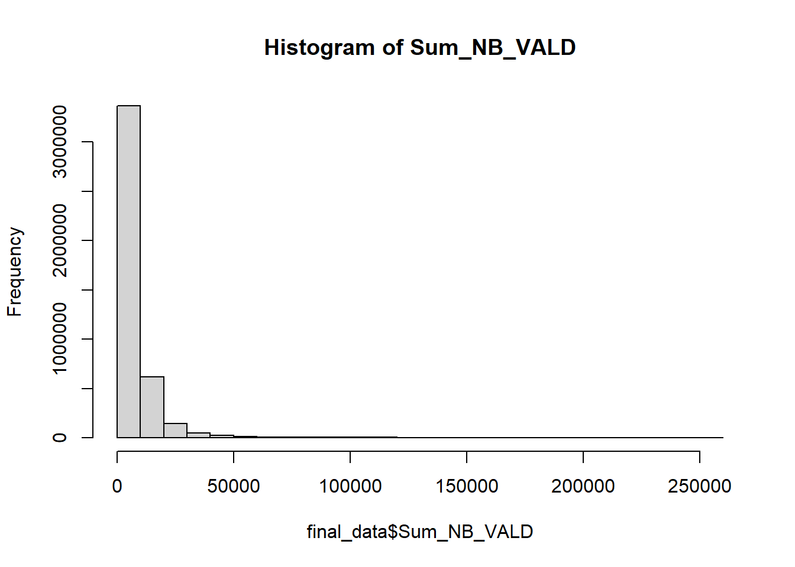

Linking to GEOS 3.11.2, GDAL 3.7.2, PROJ 9.3.0; sf_use_s2() is TRUE
library(rsconnect)
Attaching package: 'rsconnect'
The following object is masked from 'package:shiny':
serverInfo
library(leaflet)
1. Data Collection and Cleaning
#Directory where the CSV files are locateddata_directory <-"./data"#all TXT files in the specified directorytxt_files <-list.files(path = data_directory, full.names =TRUE)print(txt_files)
# Create an empty data frame to store the merged datamerged_data <-data.frame()merged_data
data frame with 0 columns and 0 rows
# Loop through each TXT file and merge it into the main datasetfor (txt_file in txt_files) {# Read the first few lines to determine the separator first_lines <-readLines(txt_file, n =5) possible_separators <-c("\t", ";") # Variable to control whether to continue to the next separator continue_next_separator <-TRUE# Try each possible separatorfor (separator in possible_separators) {if (!continue_next_separator) {break }tryCatch( { year_data <-read.delim(txt_file, header =TRUE, sep = separator, stringsAsFactors =FALSE)if ("lda"%in%names(year_data)) {names(year_data)[names(year_data) =="lda"] <-"ID_REFA_LDA" }# Convert relevant columns to character year_data$ID_REFA_LDA <-as.character(year_data$ID_REFA_LDA) year_data$NB_VALD <-as.character(year_data$NB_VALD)# Merge data merged_data <-bind_rows(merged_data, year_data)# Set the variable to false to break out of the loop continue_next_separator <-FALSE },error =function(e) {# Continue to the next separator if an error occurs continue_next_separator <-TRUE } ) }}
Warning in readLines(txt_file, n = 5): line 1 appears to contain an embedded
nul
Warning in readLines(txt_file, n = 5): line 5 appears to contain an embedded
nul
Warning in read.table(file = file, header = header, sep = sep, quote = quote, :
line 1 appears to contain embedded nulls
Warning in read.table(file = file, header = header, sep = sep, quote = quote, :
line 5 appears to contain embedded nulls
Warning in scan(file = file, what = what, sep = sep, quote = quote, dec = dec,
: EOF within quoted string
Warning in scan(file = file, what = what, sep = sep, quote = quote, dec = dec,
: embedded nul(s) found in input
Warning in read.table(file = file, header = header, sep = sep, quote = quote, :
line 1 appears to contain embedded nulls
Warning in read.table(file = file, header = header, sep = sep, quote = quote, :
line 5 appears to contain embedded nulls
Warning in scan(file = file, what = what, sep = sep, quote = quote, dec = dec,
: EOF within quoted string
Warning in scan(file = file, what = what, sep = sep, quote = quote, dec = dec,
: embedded nul(s) found in input
We found that the NB_VALD column contains “Moins de 5” values which can’t be converted to integers. We replaced these values by 0 because anything less than 5 is irrelevant.
# Numerical columns to convertcols_to_convert <-c("CODE_STIF_TRNS", "CODE_STIF_RES", "CODE_STIF_ARRET", "NB_VALD")# Replacing "Moins de 5" by 0 for the NB_VALD columnmerged_data <- merged_data %>%mutate(NB_VALD =ifelse(NB_VALD =="Moins de 5", 0, as.integer(NB_VALD)))
Warning: There was 1 warning in `mutate()`.
ℹ In argument: `NB_VALD = ifelse(NB_VALD == "Moins de 5", 0,
as.integer(NB_VALD))`.
Caused by warning in `ifelse()`:
! NAs introduced by coercion
# Conversion to integers, otherwise to NAmerged_data <- merged_data %>%mutate_at(vars(cols_to_convert), as.integer)
Warning: Using an external vector in selections was deprecated in tidyselect 1.1.0.
ℹ Please use `all_of()` or `any_of()` instead.
# Was:
data %>% select(cols_to_convert)
# Now:
data %>% select(all_of(cols_to_convert))
See <https://tidyselect.r-lib.org/reference/faq-external-vector.html>.
Warning: There were 2 warnings in `mutate()`.
The first warning was:
ℹ In argument: `CODE_STIF_RES = .Primitive("as.integer")(CODE_STIF_RES)`.
Caused by warning:
! NAs introduced by coercion
ℹ Run `dplyr::last_dplyr_warnings()` to see the 1 remaining warning.
head(merged_data)
JOUR CODE_STIF_TRNS CODE_STIF_RES CODE_STIF_ARRET LIBELLE_ARRET
1 01/01/2017 100 110 1 PORTE MAILLOT
2 01/01/2017 100 110 1 PORTE MAILLOT
3 01/01/2017 100 110 1 PORTE MAILLOT
4 01/01/2017 100 110 1 PORTE MAILLOT
5 01/01/2017 100 110 1 PORTE MAILLOT
6 01/01/2017 100 110 1 PORTE MAILLOT
ID_REFA_LDA CATEGORIE_TITRE NB_VALD
1 71379 AMETHYSTE 109
2 71379 AUTRE TITRE 61
3 71379 FGT 184
4 71379 IMAGINE R 915
5 71379 NAVIGO 2768
6 71379 TST 178
We found that there are some columns with ‘?’ values. These columns were ID_REFA_LDA and CATEGORIE_TITRE. For the CATEGORIE_TITRE column we converted it to “INCONNUE” in order to not lose too many lines of data.
# Convert the empty values to NAmerged_data[merged_data ==""] <-NA# Replace "?" with NA in the column ID_REFA_LDAmerged_data <- merged_data %>%mutate(ID_REFA_LDA =ifelse(ID_REFA_LDA =="?", NA, ID_REFA_LDA))# Replace "?" with NA in the column CATEGORIE_TITREmerged_data <- merged_data %>%mutate(CATEGORIE_TITRE =ifelse(CATEGORIE_TITRE =="?", "INCONNUE", CATEGORIE_TITRE))# Count the number of missing values for each columnmissing_values <-colSums(is.na(merged_data))# Display resultsprint(missing_values)
# Delete missing valuesmerged_data <-na.omit(merged_data)# Count the number of missing values in every columnmissing_values <-colSums(is.na(merged_data))# Display the resultprint(missing_values)
nb <- merged_data$NB_VALD# Sort the columnsorted_column <-sort(nb)# Calculate the 90th percentilepercentile_90 <-quantile(sorted_column, 0.90)# Print the resultprint(paste("90th Percentile:", percentile_90))
[1] "90th Percentile: 1782"
After displaying the boxplot of the NB_VALD (number of validations) we see that the vast majority of the numbers are low and after displaying the 90th percentile we can conclude that the 90% of the values are below 1739.
Some values are too high but aren’t considered as outliers because they represent very popular zones like “LA DEFENSE” “CHATELET” and the maximum number is around 120000 which is high but still a real number.
Collecting geographical data
# Load the new datasetlibrary(readxl)# Load the new dataset from Excelnew_data <-read_excel("./data/zones-d-arrets.xlsx") # Replace with the actual pathhead(new_data)
Merging the data after grouping by ‘ID_REFA_LDA’, ‘JOUR’ and ‘LIBELLE_ARRET’
# Select only the required columnsselected_cols <-c("ZdAYEpsg2154", "ZdAXEpsg2154", "ZdCId")new_data <- new_data[, selected_cols, drop =FALSE]# Assuming merged_data contains your original dataset# Group merged_data by "ID_REFA_LDA" and "JOUR" and then sum NB_VALDfinal_data <- merged_data %>%group_by(ID_REFA_LDA, JOUR, LIBELLE_ARRET) %>%summarize(Sum_NB_VALD =sum(as.numeric(NB_VALD), na.rm =TRUE), .groups ='drop_last') %>%left_join(new_data, by =c("ID_REFA_LDA"="ZdCId"))
Warning in left_join(., new_data, by = c(ID_REFA_LDA = "ZdCId")): Detected an unexpected many-to-many relationship between `x` and `y`.
ℹ Row 113 of `x` matches multiple rows in `y`.
ℹ Row 3540 of `y` matches multiple rows in `x`.
ℹ If a many-to-many relationship is expected, set `relationship =
"many-to-many"` to silence this warning.
# View the resulting datasethead(final_data)
# A tibble: 6 × 6
# Groups: ID_REFA_LDA, JOUR [3]
ID_REFA_LDA JOUR LIBELLE_ARRET Sum_NB_VALD ZdAYEpsg2154 ZdAXEpsg2154
<chr> <chr> <chr> <dbl> <dbl> <dbl>
1 0 01/06/2022 "AIME CESAIRE " 2423 NA NA
2 0 01/06/2022 "MAIRIE AUBERV." 5616 NA NA
3 0 02/05/2022 "AIME CESAIRE " 5 NA NA
4 0 02/05/2022 "MAIRIE AUBERV." 5 NA NA
5 0 02/06/2022 "AIME CESAIRE " 2302 NA NA
6 0 02/06/2022 "MAIRIE AUBERV." 5750 NA NA
# Count the number of NA values for each columnna_counts <-colSums(is.na(final_data))# Display the resultprint(na_counts)
#delete themfinal_data <-na.omit(final_data)# Count the number of NA values for each columnna_counts <-colSums(is.na(final_data))# Display the resultprint(na_counts)
Converting the date column from string to date. We found that for 2023 there is a different format unlike the other years.
final_data$JOUR <-ifelse(substr(final_data$JOUR, 1, 4) =="2023", as.Date(final_data$JOUR, format ="%Y-%m-%d"), as.Date(final_data$JOUR, format ="%d/%m/%Y"))final_data$JOUR <-as.Date(as.numeric(final_data$JOUR), origin ="1970-01-01")#Summary statisticssummary(final_data)
ID_REFA_LDA JOUR LIBELLE_ARRET Sum_NB_VALD
Length:4274003 Min. :2017-01-01 Length:4274003 Min. : 0
Class :character 1st Qu.:2018-08-19 Class :character 1st Qu.: 819
Mode :character Median :2020-04-12 Mode :character Median : 3746
Mean :2020-04-08 Mean : 7536
3rd Qu.:2021-12-01 3rd Qu.: 8791
Max. :2023-06-30 Max. :255072
ZdAYEpsg2154 ZdAXEpsg2154
Min. :6786790 Min. :593192
1st Qu.:6857458 1st Qu.:646374
Median :6862185 Median :651088
Mean :6860202 Mean :651310
3rd Qu.:6866269 3rd Qu.:655857
Max. :6896437 Max. :722333
Plot daily ridership trends (we summed the number of validations for each day)
# Filter data based on IDsfiltered_new_data <- new_data %>%filter(ZdCId %in% final_data$ID_REFA_LDA)# Convert to spatial objectfinal_data_sf <-st_as_sf(filtered_new_data, coords =c("ZdAXEpsg2154", "ZdAYEpsg2154"), crs =2154)# Transform to EPSG 4326final_data_sf <-st_transform(final_data_sf, 4326)# Extract coordinatesfiltered_new_data$X <-st_coordinates(final_data_sf)[, "X"]filtered_new_data$Y <-st_coordinates(final_data_sf)[, "Y"]# Create leaflet mapmy_map <-leaflet() %>%addTiles() %>%setView(lng =mean(st_coordinates(final_data_sf$geometry)[, "X"]),lat =mean(st_coordinates(final_data_sf$geometry)[, "Y"]),zoom =11 ) %>%addMarkers(data = filtered_new_data,lng =~X, # Use the X column for longitudelat =~Y # Use the Y column for latitude )# Show the mapmy_map
With this graph about the daily ridership data, we observe a regular drop of validations each year at the same month, mostly in july and especially august. It’s due to the students and workers mostly going on vacations in august and thus stopping to use the network.
We can also observe a massive drop in early 2020, because of the covid-19 and the lockdown, so almost no one was using the network during this time. From the second semester of 2020 to the end 2022, we can see the number of users rise again with the same trends in july/august until 2023 when all restrictions were lifted and people used the network in a pre-covid amount again.
Return a summary table showing the top three LIBELLE_ARRET based on the total number of validations Sum_NB_VALD which are la defense ,sain-lazare and gare de lyon. It is very logical to find these stations because they are very popular stations in Paris.
# Select and arrange the top 3 LIBELLE_ARRET based on NB_VALDtop_arrets <- final_data %>%group_by(LIBELLE_ARRET) %>%summarize(Total_NB_VALD =sum(Sum_NB_VALD, na.rm =TRUE)) %>%top_n(3, Total_NB_VALD) %>%arrange(desc(Total_NB_VALD))# Print the resultprint(top_arrets)
# A tibble: 3 × 2
LIBELLE_ARRET Total_NB_VALD
<chr> <dbl>
1 LA DEFENSE-GRANDE ARCHE 1857951808
2 SAINT-LAZARE 1301371985
3 GARE DE LYON 1257794160
We zoomed for the first 3 months of the data because when we used the whole data the graph was too dense, we had a black graph as a result. Zooming was a solution to detect the seasonality.
As we can see in the graph below there is a weekly seasonality. Each week there is a huge drop in the use of the transportation network in France. we used frequency = 7 because our unit of time is per day.
subset_data <- final_data$Sum_NB_VALD[1:(3*60)] #We put 60 because we have 2 lines for each day (the entries for each station). 3*60 is equivalent to 3 months.# Set frequency to 7 for weekly seasonality (adjust as needed)decomposition <-decompose(ts(subset_data, frequency =7))# Plot the decomposed time seriesplot(decomposition)

subset_data <- final_data$Sum_NB_VALD[1:(24*60)] #We put 60 because we have 2 lines for each day (the entries for each station). 24*60 is equivalent to 2 years.# Set frequency to 364 for yearly seasonality (adjust as needed)decomposition <-decompose(ts(subset_data, frequency =364))# Plot the decomposed time seriesplot(decomposition)

We used only 2 years to see yearly seasonality because the data is too large (and as a result the graph becomes too dense). As we can see there is a seasonality because in august the use of transportation becomes less frequent as well as the yearly holidays.
# Plot monthly trendsggplot(final_data, aes(x =format(JOUR, "%Y-%m"), y = Sum_NB_VALD)) +geom_bar(stat ="summary", fun ="mean", fill ="skyblue") +labs(title ="Monthly Average Ridership",x ="Month",y ="Mean NB_VALD")

We notice a trend every 12 months, also there is a drop in the number of validations in august for each year. But for 2020 there is a drop for almost the whole year because of COVID19 (especially the in the CURFEW period).
The covid in 2020 caused a drop of the number of validations which is like an outlier that will affect the data and its seasonality.
library(lubridate)
Attaching package: 'lubridate'
The following objects are masked from 'package:base':
date, intersect, setdiff, union
final_data
# A tibble: 4,274,003 × 6
# Groups: ID_REFA_LDA, JOUR [1,657,582]
ID_REFA_LDA JOUR LIBELLE_ARRET Sum_NB_VALD ZdAYEpsg2154 ZdAXEpsg2154
<chr> <date> <chr> <dbl> <dbl> <dbl>
1 411281 2017-01-01 LYCEE HENRI SEL… 63 6868624 664446
2 411281 2017-01-01 LYCEE HENRI SEL… 63 6868564 664461
3 411281 2017-02-01 LYCEE HENRI SEL… 881 6868624 664446
4 411281 2017-02-01 LYCEE HENRI SEL… 881 6868564 664461
5 411281 2017-03-01 LYCEE HENRI SEL… 833 6868624 664446
6 411281 2017-03-01 LYCEE HENRI SEL… 833 6868564 664461
7 411281 2017-04-01 LYCEE HENRI SEL… 306 6868624 664446
8 411281 2017-04-01 LYCEE HENRI SEL… 306 6868564 664461
9 411281 2017-05-01 LYCEE HENRI SEL… 132 6868624 664446
10 411281 2017-05-01 LYCEE HENRI SEL… 132 6868564 664461
# ℹ 4,273,993 more rows
{ubridate)}
Extract the day of the week using lubridate. Creating a new column called Weekday
final_data$Weekday <-weekdays(final_data$JOUR)
Creating a new column indicating holiday or non-holiday called HolidayType
Group by weekday and calculate the mean for each day of the week
# Group by weekday and calculate the mean for each day of the weekmean_by_weekday <- final_data %>%group_by(Weekday, HolidayType) %>%summarize(Mean_Sum_NB_VALD =mean(Sum_NB_VALD, na.rm =TRUE))
`summarise()` has grouped output by 'Weekday'. You can override using the
`.groups` argument.
Calculate the mean for holiday days
# Calculate the mean for holiday daysmean_holiday <- mean_by_weekday %>%filter(HolidayType =="Holiday") %>%summarize(Mean_Sum_NB_VALD_Holiday =mean(Mean_Sum_NB_VALD, na.rm =TRUE))
Plot the comparison
ggplot(mean_by_weekday, aes(x = Weekday, y = Mean_Sum_NB_VALD, color = HolidayType)) +geom_point(size =3) +#geom_point(data = mean_holiday, aes(x = "Holiday", y = Mean_Sum_NB_VALD_Holiday), size = 3, color = "red") +labs(title ="Mean Sum_NB_VALD Comparison",x ="Day of the Week",y ="Mean Sum_NB_VALD",color ="Period") +theme_minimal()

This scatter plot shows the average number of validations (number of people using the network) for each day of the week. It compares holidays and non holidays. As one could expect, less people use public transportation on holidays than non holidays, for the usual work days of the week. it’s only different for Sunday, where more people us the transports during holidays than non holidays, because the number of users was already significantly lower than the other days.
4. Comparison with Norms
# Function to check if a date is within a special periodis_special_period <-function(date, special_periods) {return(any(date %in% special_periods))}# Get the range of years in your datasetdata_years <-unique(year(final_data$JOUR))
Below, we create a special periods variable containing the school holidays (December and February) for each year.
# Initialize an empty vector to store special periodsspecial_periods <-c()# Loop through each year and add sequences to the special_periods vectorfor (year_val in data_years) { start_date1 <-as.Date(sprintf("%d-12-17", year_val)) end_date1 <-as.Date(sprintf("%d-01-03", year_val +1)) start_date2 <-as.Date(sprintf("%d-02-04", year_val)) end_date2 <-as.Date(sprintf("%d-02-20", year_val)) special_periods <-c(special_periods, seq(start_date1, end_date1, by ="days"), seq(start_date2, end_date2, by ="days"))}# Convert numerical representations to datesspecial_periods <-as.Date(special_periods, origin="1970-01-01")print(special_periods)
Group by weekday and special period, calculate the mean for each day
# Group by weekday and special period, calculate the mean for each daymean_by_weekday_and_special_period <- final_data %>%group_by(Weekday, SpecialPeriod) %>%summarize(Mean_Sum_NB_VALD =mean(Sum_NB_VALD, na.rm =TRUE))
`summarise()` has grouped output by 'Weekday'. You can override using the
`.groups` argument.
# Plot the comparisonggplot(mean_by_weekday_and_special_period, aes(x = Weekday, y = Mean_Sum_NB_VALD, color = SpecialPeriod)) +geom_point(size =3) +labs(title ="Mean Sum_NB_VALD Comparison",x ="Day of the Week",y ="Mean Sum_NB_VALD",color ="Special Period") +theme_minimal()

We conclude that in school days the transportation tools are more used than in school vacation ones, also Sunday in France people don’t usually leave their homes that’s why there ’s a drop for both there.
5. Dashboard Development using Shiny
We used only 10000 points of the data because it is very slow and the pc crashes when using the whole data.
copy <- final_datafinal_data1 <-head(final_data,10000)# Define UIui <-fluidPage(titlePanel("Ridership Comparison"),sidebarLayout(sidebarPanel(dateInput("start_date_ref", "Select Reference Start Date:", value =as.Date("2017-01-01")),dateInput("end_date_ref", "Select Reference End Date:", value =as.Date("2017-01-03")),dateInput("start_date_comp", "Select Comparison Start Date:", value =as.Date("2017-01-07")),dateInput("end_date_comp", "Select Comparison End Date:", value =as.Date("2017-01-10")),leafletOutput("map_station"),br() ),mainPanel(tabsetPanel(tabPanel("Ridership Comparison", plotOutput("ridership_comparison"),tableOutput("station_stats")),tabPanel("Station Statistics", selectInput("station_name", "Select Station:", choices =unique(final_data1$LIBELLE_ARRET), selected ="PERNETY"),tableOutput("station_stats_tab")),tabPanel("Holiday Statistics",selectInput("holiday_type", "Select Holiday Type:", choices =unique(final_data1$HolidayType), selected ="Public"),tableOutput("holiday_stats_tab")) ) ) ))
# Define serverserver <-function(input, output, session) {# Filter data based on user inputs filtered_data_ref <-reactive({ final_data1 %>%filter(JOUR >= input$start_date_ref, JOUR <= input$end_date_ref) }) filtered_data_comp <-reactive({ final_data1 %>%filter(JOUR >= input$start_date_comp, JOUR <= input$end_date_comp) })# Update ridership comparison plot based on filtered data output$ridership_comparison <-renderPlot({ggplot() +geom_line(data =filtered_data_ref(), aes(x = JOUR, y = Sum_NB_VALD, color = Weekday), linetype ="dashed") +geom_line(data =filtered_data_comp(), aes(x = JOUR, y = Sum_NB_VALD, color = Weekday), linetype ="dashed") +labs(title ="Ridership Comparison",x ="Date",y ="Total Validations",color ="Day of the Week") +theme_minimal() }) filtered_new_data <- new_data %>%filter(ZdCId %in% final_data1$ID_REFA_LDA) print(filtered_new_data) final_data_sf <-st_as_sf(filtered_new_data, coords =c("ZdAXEpsg2154", "ZdAYEpsg2154"), crs =2154) final_data_sf <-st_transform(final_data_sf, 4326) # Transform to EPSG 4326 filtered_new_data$X <-st_coordinates(final_data_sf)[, "X"] filtered_new_data$Y <-st_coordinates(final_data_sf)[, "Y"]# Create a leaflet map for station selection output$map_station <-renderLeaflet({leaflet() %>%addTiles() %>%setView(lng =mean(st_coordinates(final_data_sf$geometry)[,"X"]), lat =mean(st_coordinates(final_data_sf$geometry)[,"Y"]), zoom =11) %>%addMarkers(data = final_data_sf, lng =st_coordinates(final_data_sf$geometry)[,"X"], lat =st_coordinates(final_data_sf$geometry)[,"Y"]) })# Observe the selection on the map and update station statisticsobserveEvent(input$map_station_marker_click, { click <- input$map_station_marker_clickif (!is.null(click)) { lat <- click$lat lng <- click$lngprint(lat)print(lng)print(str_sub(as.character(lng), end =7)) id = filtered_new_data %>%filter(str_detect(as.character(X), str_sub(as.character(lng), end =7))) %>%filter(str_detect(as.character(Y), str_sub(as.character(lat), end =7))) %>%select(ZdCId)print(id)# Filter final_data1 based on the clicked coordinates selected_station <- final_data1 %>%ungroup()%>%filter(ID_REFA_LDA==id$ZdCId[1]) %>%select(LIBELLE_ARRET) %>%distinct()print(selected_station) output$station_stats <-renderTable({ summarise_data <- final_data1 %>%filter(LIBELLE_ARRET %in% selected_station$LIBELLE_ARRET) %>%group_by(LIBELLE_ARRET, Weekday) %>%summarise(Total_Validations =sum(Sum_NB_VALD, na.rm =TRUE),Avg_Validations =mean(Sum_NB_VALD, na.rm =TRUE),Max_Validations =max(Sum_NB_VALD, na.rm =TRUE) )return(summarise_data) }) } })# Add server logic for the "Station Statistics" tabobserveEvent(input$station_name, { selected_station <- final_data1 %>%filter(LIBELLE_ARRET == input$station_name) %>%select(LIBELLE_ARRET) %>%distinct() output$station_stats_tab <-renderTable({ summarise_data <- final_data1 %>%filter(LIBELLE_ARRET %in% selected_station$LIBELLE_ARRET) %>%group_by(LIBELLE_ARRET, Weekday) %>%summarise(Total_Validations =sum(Sum_NB_VALD, na.rm =TRUE),Avg_Validations =mean(Sum_NB_VALD, na.rm =TRUE),Max_Validations =max(Sum_NB_VALD, na.rm =TRUE) )return(summarise_data) }) })# Add server logic for the "Holiday Statistics" tabobserveEvent(input$holiday_type, { output$holiday_stats_tab <-renderTable({ summarise_data <- final_data1 %>%filter(HolidayType == input$holiday_type) %>%group_by(LIBELLE_ARRET, Weekday) %>%summarise(Total_Validations =sum(Sum_NB_VALD, na.rm =TRUE),Avg_Validations =mean(Sum_NB_VALD, na.rm =TRUE),Max_Validations =max(Sum_NB_VALD, na.rm =TRUE) )return(summarise_data) }) })}
# Run the applicationshinyApp(ui, server)
Shiny applications not supported in static R Markdown documents
This is a screenshot on how the shiny app works:
6. Statistical Methods
summary(final_data$Sum_NB_VALD)
Min. 1st Qu. Median Mean 3rd Qu. Max.
0 819 3746 7536 8791 255072
This summary provides insights into the distribution of the number of validations, including central tendency (mean, median) and dispersion (range, quartiles).
The mean represents the average value of the data set, calculated by adding up all the values and dividing by the number of observations. In this case, the mean number of validations is 7536.
The median is the middle value of the data set when it is sorted in ascending order. In this case, the median number of validations is 3746, which means that half of the observations have a number of validations below 3746, and half have a number of validations above 3746.
Welch Two Sample t-test
data: final_data$Sum_NB_VALD by final_data$HolidayType
t = -140.94, df = 28471, p-value < 2.2e-16
alternative hypothesis: true difference in means between group Holiday and group Non-Holiday is not equal to 0
95 percent confidence interval:
-4940.694 -4805.154
sample estimates:
mean in group Holiday mean in group Non-Holiday
2692.817 7565.741
The p-value is highly significant (p < 0.05), suggesting that there is a significant difference in the number of validations between Holiday and Non-Holiday periods. The confidence interval provides a range for the difference in means, indicating that the mean number of validations is significantly lower during Holiday periods compared to Non-Holiday periods.
hist(final_data$Sum_NB_VALD, main ="Histogram of Sum_NB_VALD")

We don’t have normality! so we can’t take the t.test results into consideration! ==> we have to use wilcoxon non parametric test.
wilcox.test(Sum_NB_VALD ~ HolidayType, data = final_data)
Wilcoxon rank sum test with continuity correction
data: Sum_NB_VALD by HolidayType
W = 3.4601e+10, p-value < 2.2e-16
alternative hypothesis: true location shift is not equal to 0
The results indicate a highly significant p-value (< 2.2e-16), suggesting that there is a significant difference in the location (median) between the groups “Holiday” and “Non-Holiday.”
We can use the anova test because our data is very huge, we don’t need to check normality!
anova(lm(Sum_NB_VALD ~ Weekday, data = final_data))
Analysis of Variance Table
Response: Sum_NB_VALD
Df Sum Sq Mean Sq F value Pr(>F)
Weekday 6 1.7000e+13 2.8333e+12 13444 < 2.2e-16 ***
Residuals 4273996 9.0075e+14 2.1075e+08
---
Signif. codes: 0 '***' 0.001 '**' 0.01 '*' 0.05 '.' 0.1 ' ' 1
The ANOVA results show a highly significant difference in means across different weekdays. The small p-value (< 0.05) suggests that there is a significant variation in the number of validations between at least two weekdays. The F value is large, further supporting the evidence for a significant difference. The significant result indicates that there are weekday-specific variations in ridership.
7. Shiny App Deployment
For the deployment we used shinyapps.io you can find the Deployement folder in the github repository that contains the code that we deployed.
Here is the Link : https://rprojectigm.shinyapps.io/shiny/